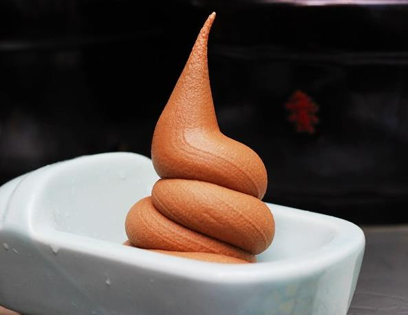
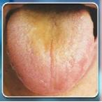
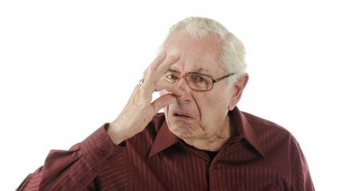
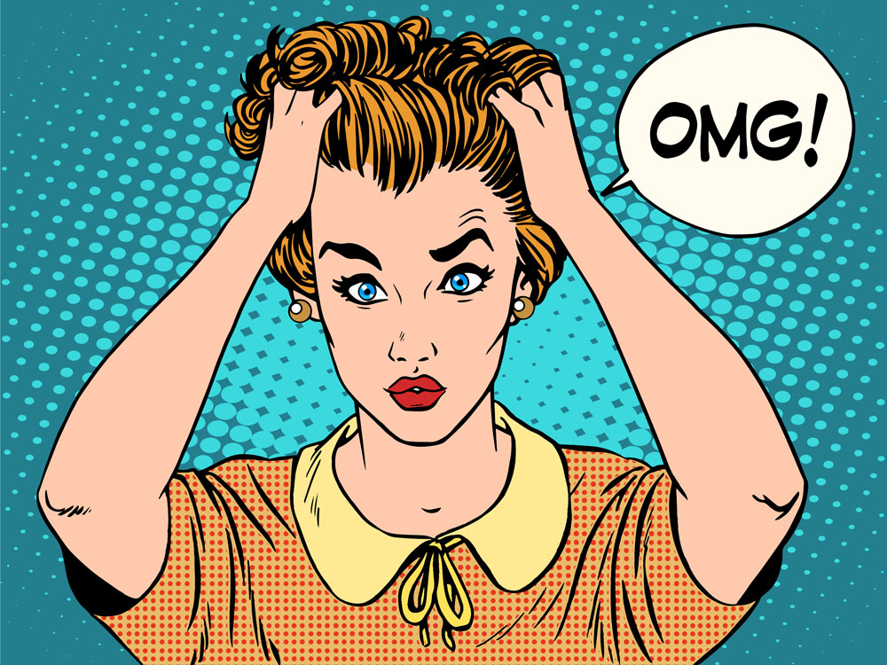
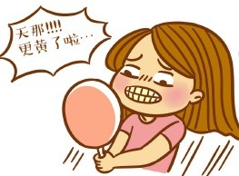
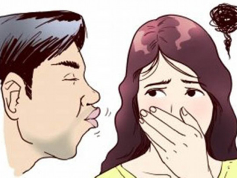

我的体质测试结果
我的体质是
湿热质
根据您的体质辨识结果，建议您从湿热质开始调理，湿热体质是以清浊内蕴、阳气偏盛为主要特征的体质状态。
     
什么是湿热？
不干净，不清爽，黏糊糊，爱长痘。
湿热质是一种内环境不清洁，又湿又热，湿热氤氲，排泄不畅的体质。
内外皆显得「浊」，不干净。
湿热体质有什么困扰？
脸总像洗不干净。面色发黄、发暗、油腻。
牙齿比较黄，牙龈比较红，口唇也比较红。
容易生以脓包为主的痤疮，红肿疼痛较明显。
口干、口苦、口臭。
汗味大、体味大。
大便燥结或者粘滞不爽。
小便深黄色，异味大。
容易紧张、压抑、焦虑、发怒。
如果人瘦，则身上容易生疽（深度浓肿）。
我为什么会湿热？
吸烟、喝酒、熬夜三者兼备。
长期情绪压抑，借酒浇愁。
肝炎病毒携带者。
总吃香辣口味，煎、烧烤、油炸食物。
长期生活在湿热环境中的人，如南方人。
过度进补。
湿热体质更容易患哪些疾病？
皮肤问题：脂溢性皮炎、酒糟鼻、脓包痤疮、毛囊炎、疮疖肿毒等。或者下半身皮肤真菌感染，如体癣、股癣、脚癣等。
肝胆系统疾病：携带肝炎病毒、急性黄疸型肝炎、胆结石、胆囊炎、结肠炎。
泌尿系统及生殖系统感染性疾病：在过度疲劳时较易感染膀胱炎、尿道炎、肾盂肾炎等。
轻妍教你这么改善！
饮食调理：
湿热体质的人要想改变湿热内蕴的体质状态，宜食用清凉泻火、化湿利水的食品，如薏米、带心莲子、红小豆、蚕豆、绿豆、绿豆芽、西红柿、草莓、紫菜、冬瓜、丝瓜、苦瓜、黄瓜、绿叶蔬菜、野菜、莲藕、产自北方的时令水果等。
忌食辛辣油腻、温燥滋补、肥甘厚味的食物，少喝酒，少吃海鲜。辣椒、大蒜、荔枝、芒果等温热果蔬应当少吃，白酒、奶油、动物内脏、狗肉、鹿肉、牛肉、羊肉均应忌食。
中药调理：
湿热体质的药物调养以甘淡苦寒、清热利湿的中药为主 ，如栀子、白芷、白茅根、黄连、虎杖、黄芩、马齿苋、芦根、知母、苦参、天花粉、野菊花、苦菜花、蒲公英、番泻叶、茯苓、薏苡仁、芦荟、茵陈、泽泻、玉米须、淡竹叶、赤小豆、甘草等。
适度运动：
重点在舒展筋骨关节，增加身体柔韧度。因为筋骨关节的僵硬、涩滞不利肝胆的疏泄。
不熬夜，保证睡眠时间对改善湿热体质非常重要。
经络梳理：
首选背部膀胱经的刮痧、罐等。同时胆经，脾经上的穴位也可以多疏通。
网站首页
一键拨号
体质分析